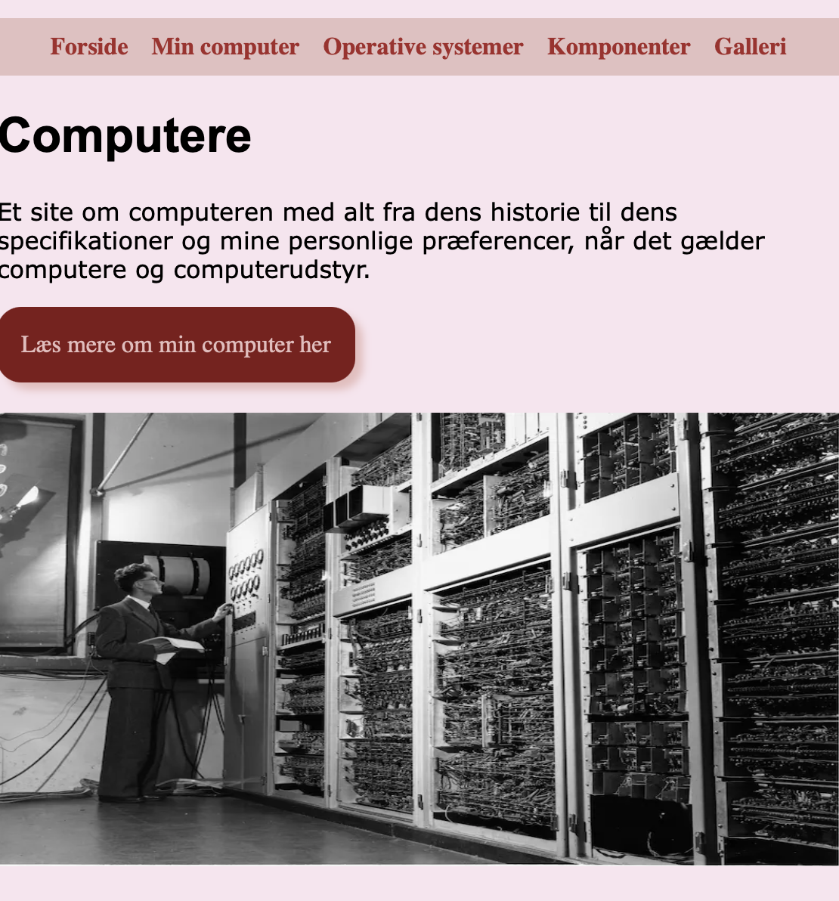
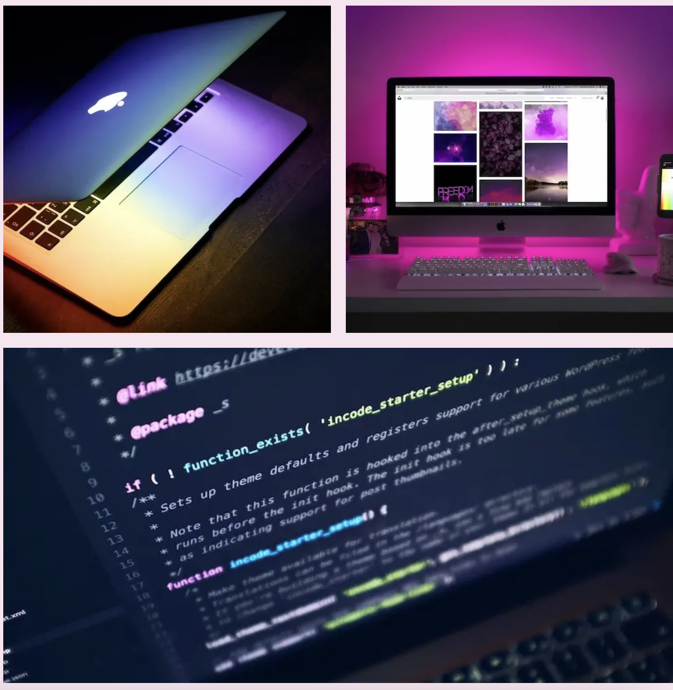

Mobilsite - Grundlæggende web
Mit første site - og første gang vi arbejdede med CSS Grid. Dette projekt var vores introduktion til at kode et simpelt layout med HTML og CSS, hvor vi især arbejdede med grid-strukturen. Det var første gang, vi fik lov til at bygge vores helt egen side fra bunden, og det gav en rigtig god forståelse for, hvordan man kan bruge grid til at organisere indhold visuelt og teknisk. Det var en spændende proces, hvor vi begyndte at forstå, hvordan design og struktur hænger sammen – og hvordan man skaber balance og overblik i sin opsætning. Selvom det var nyt og udfordrende, var det også første skridt mod at kunne lave mere avancerede og kreative løsninger senere hen.
Tryk her for at komme videre til hjemmesiden

